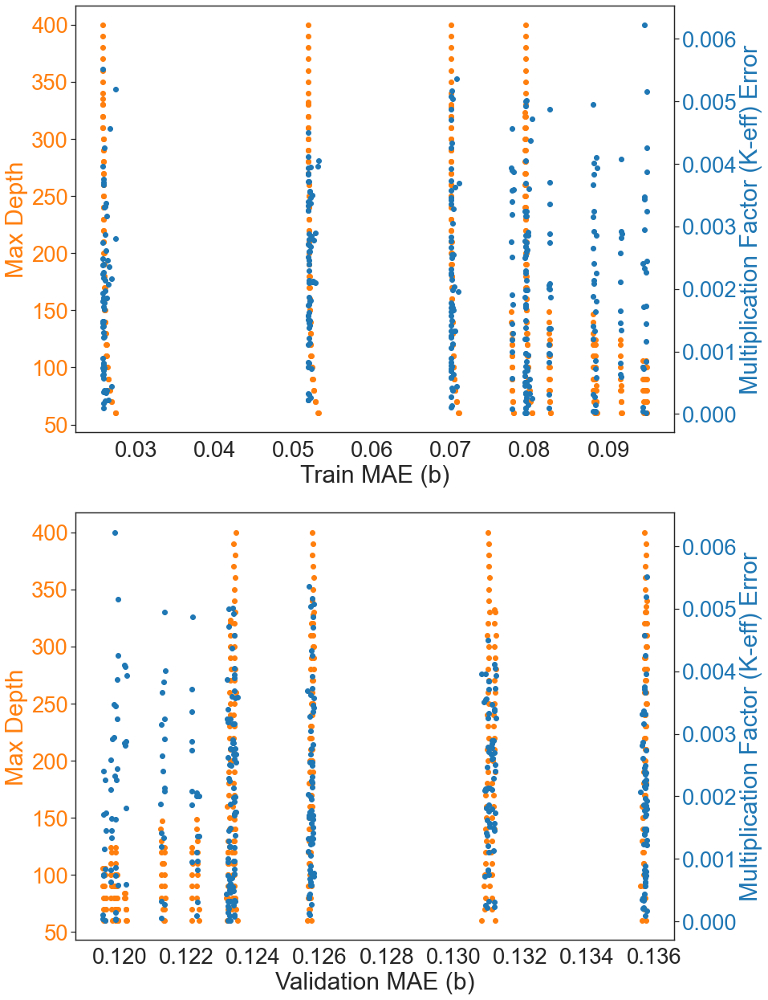
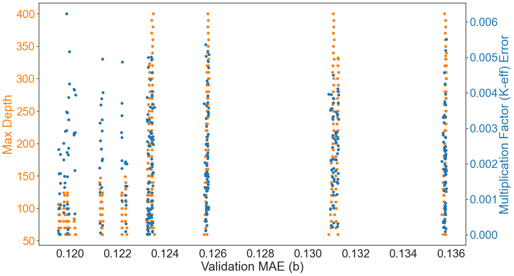
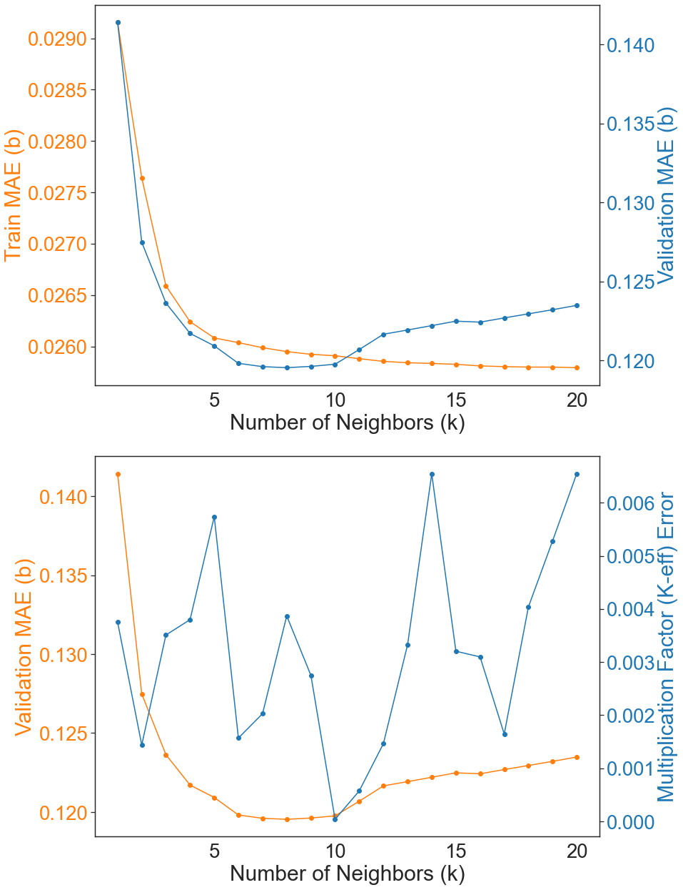
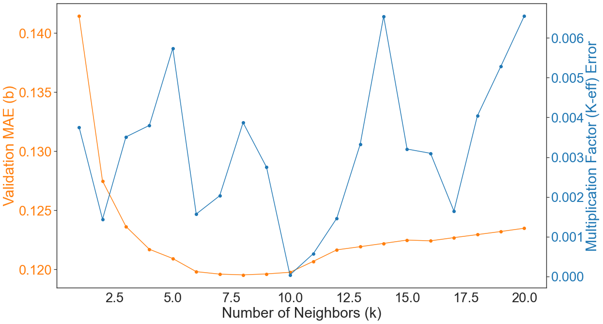

Analyzing Benchmark Results for Validation¶
[27]:
import pandas as pd
import numpy as np
import seaborn as sns
import matplotlib.pyplot as plt
import importlib
import os
pd.set_option('display.max_columns', 500)
pd.set_option('display.max_rows', 50)
pd.options.mode.chained_assignment = None # default='warn'
sns.set_style("white")
import sys
# This allows us to import the nucml utilities
sys.path.append("..")
import nucml.exfor.data_utilities as exfor_utils
import nucml.evaluation.data_utilities as endf_utils
import nucml.plot.plotting_utilities as plot_utils
import nucml.datasets as nuc_data
import nucml.ace.data_utilities as ace_utils
import nucml.model.model_building as model_building
import nucml.model.model_utilities as model_utils
import nucml.general_utilities as gen_utils
import nucml.ace.plotting_utilities as ace_plots
[28]:
importlib.reload(exfor_utils)
importlib.reload(gen_utils)
importlib.reload(endf_utils)
importlib.reload(plot_utils)
importlib.reload(nuc_data)
importlib.reload(ace_utils)
importlib.reload(model_building)
importlib.reload(model_utils)
importlib.reload(ace_plots)
print("Finish re-loading scripts.")
Finish re-loading scripts.
[9]:
figure_dir = "figures/B0/"
[10]:
sns.set(font_scale=2.5)
sns.set_style('white')
Gathering Results from Benchmark Calculations¶
[29]:
dt_results = ace_utils.gather_benchmark_results("ml/DT_B0/")
[30]:
dt_results
[30]:
| Model | Benchmark | K_eff_ana | Unc_ana | K_eff_imp | Unc_imp | Deviation_Ana | Deviation_Imp | |
|---|---|---|---|---|---|---|---|---|
| 0 | DT400_MSS2_MSL1_robust_one_hot_B0_v1 | U233-MET-FAST-001 | 1.004320 | 0.00140 | 1.003470 | 0.00100 | 0.004320 | 0.003470 |
| 1 | DT90_MSS10_MSL7_minmax_one_hot_B0_v1 | U233-MET-FAST-001 | 0.928458 | 0.00122 | 0.929726 | 0.00091 | 0.071542 | 0.070274 |
| 2 | DT90_MSS10_MSL7_minmax_one_hot_B0_v1 | U233-MET-FAST-002 | 0.930687 | 0.00152 | 0.929404 | 0.00097 | 0.069313 | 0.070596 |
| 3 | DT90_MSS10_MSL7_minmax_one_hot_B0_v1 | U233-MET-FAST-003 | 0.928207 | 0.00130 | 0.928817 | 0.00083 | 0.071793 | 0.071183 |
| 4 | DT99_MSS10_MSL7_robust_one_hot_B0_v1 | U233-MET-FAST-001 | 1.000320 | 0.00123 | 0.999088 | 0.00096 | 0.000320 | 0.000912 |
[33]:
dt_results.groupby("Model").mean()
[33]:
| K_eff_ana | Unc_ana | K_eff_imp | Unc_imp | Deviation_Ana | Deviation_Imp | |
|---|---|---|---|---|---|---|
| Model | ||||||
| DT400_MSS2_MSL1_robust_one_hot_B0_v1 | 1.004320 | 0.001400 | 1.003470 | 0.001000 | 0.004320 | 0.003470 |
| DT90_MSS10_MSL7_minmax_one_hot_B0_v1 | 0.929117 | 0.001347 | 0.929316 | 0.000903 | 0.070883 | 0.070684 |
| DT99_MSS10_MSL7_robust_one_hot_B0_v1 | 1.000320 | 0.001230 | 0.999088 | 0.000960 | 0.000320 | 0.000912 |
[173]:
knn_results = ace_utils.gather_benchmark_results("acedata_ml/U233/KNN_B0/")
Analyzing Decision Tree Results¶
[174]:
to_append_dt = pd.read_csv("../ML_EXFOR_neutrons/2_DT/DT_B0/dt_results.csv")
to_append_dt["Model"] = to_append_dt.model_path.apply(lambda x: os.path.basename(os.path.dirname(x)))
to_append_dt = to_append_dt[["Model", "train_mae", "val_mae", "test_mae", "normalizer", "max_depth", "mss", "msl"]]
[175]:
dt_final = dt_results.merge(to_append_dt, on="Model")
[183]:
dt_final.sort_values(by="Deviation_Ana").head()
[183]:
| Model | K_eff_ana | Unc_ana | K_eff_imp | Unc_imp | Deviation_Ana | Deviation_Imp | train_mae | val_mae | test_mae | normalizer | max_depth | mss | msl | |
|---|---|---|---|---|---|---|---|---|---|---|---|---|---|---|
| 13 | DT100_MSS15_MSL7_standard_one_hot_B0_v5 | 0.999986 | 0.00134 | 0.999747 | 0.00094 | 0.000014 | 0.000253 | 0.094735 | 0.119564 | 0.119406 | standard | 100 | 15 | 7.0 |
| 215 | DT310_MSS15_MSL1_standard_one_hot_B0_v5 | 1.000020 | 0.00128 | 0.999413 | 0.00094 | 0.000020 | 0.000587 | 0.079405 | 0.123328 | 0.122877 | standard | 310 | 15 | 1.0 |
| 63 | DT130_MSS15_MSL1_standard_one_hot_B0_v5 | 1.000020 | 0.00147 | 0.999214 | 0.00103 | 0.000020 | 0.000786 | 0.079611 | 0.123247 | 0.122789 | standard | 130 | 15 | 1.0 |
| 26 | DT110_MSS10_MSL5_standard_one_hot_B0_v5 | 0.999973 | 0.00139 | 0.998799 | 0.00090 | 0.000027 | 0.001201 | 0.088348 | 0.119878 | 0.119798 | standard | 110 | 10 | 5.0 |
| 4 | DT100_MSS10_MSL5_standard_one_hot_B0_v5 | 1.000040 | 0.00138 | 0.999120 | 0.00099 | 0.000040 | 0.000880 | 0.088350 | 0.119874 | 0.119792 | standard | 100 | 10 | 5.0 |
[211]:
dt_standard = dt_final[dt_final.normalizer == "standard"]
[212]:
model_utils.get_best_models_df(dt_standard)
[212]:
| Model | K_eff_ana | Unc_ana | K_eff_imp | Unc_imp | Deviation_Ana | Deviation_Imp | train_mae | val_mae | test_mae | normalizer | max_depth | mss | msl | tag | |
|---|---|---|---|---|---|---|---|---|---|---|---|---|---|---|---|
| 237 | DT335_MSS2_MSL1_standard_one_hot_B0_v5 | 1.00396 | 0.00139 | 1.00331 | 0.00101 | 0.00396 | 0.00331 | 0.025784 | 0.135760 | 0.135082 | standard | 335 | 2 | 1.0 | Train |
| 20 | DT106_MSS10_MSL7_standard_one_hot_B0_v5 | 1.00011 | 0.00137 | 0.99954 | 0.00090 | 0.00011 | 0.00046 | 0.094400 | 0.119509 | 0.119396 | standard | 106 | 10 | 7.0 | Val |
| 353 | DT90_MSS15_MSL7_standard_one_hot_B0_v5 | 1.00116 | 0.00127 | 1.00023 | 0.00087 | 0.00116 | 0.00023 | 0.094737 | 0.119555 | 0.119394 | standard | 90 | 15 | 7.0 | Test |
[189]:
ace_plots.dt_dual_keff_plot(
dt_final[dt_final.Deviation_Ana < 0.03],
"train_mae", "val_mae", "max_depth", "Deviation_Ana", save=True, saving_dir=figure_dir)

[192]:
ace_plots.dt_keff_plot(dt_final[dt_final.Deviation_Ana < 0.03], "val_mae", "max_depth", "Deviation_Ana", save=True, saving_dir=figure_dir)

Analyzing KNN Results¶
[193]:
to_append_knn = pd.read_csv("../ML_EXFOR_neutrons/1_KNN/KNN_B0/knn_results.csv")
to_append_knn["Model"] = to_append_knn.model_path.apply(lambda x: os.path.basename(os.path.dirname(x)))
to_append_knn = to_append_knn[["Model", "id", "train_mae", "val_mae", "test_mae", "normalizer", "distance_metric"]]
[194]:
knn_final = knn_results.merge(to_append_knn, on="Model")
[195]:
knn_final["k"] = knn_final.Model.apply(lambda x: x.split("_")[0][1:]).astype(int)
[197]:
knn_final.sort_values(by="Deviation_Ana").head()
[197]:
| Model | K_eff_ana | Unc_ana | K_eff_imp | Unc_imp | Deviation_Ana | Deviation_Imp | id | train_mae | val_mae | test_mae | normalizer | distance_metric | k | |
|---|---|---|---|---|---|---|---|---|---|---|---|---|---|---|
| 1 | k10_distance_euclidean_robust_one_hot_B0_v4 | 1.000040 | 0.00133 | 1.000170 | 0.00091 | 0.000040 | 0.000170 | 10 | 0.025909 | 0.119757 | 0.121358 | robust | euclidean | 10 |
| 7 | k11_distance_euclidean_robust_one_hot_B0_v4 | 0.999425 | 0.00127 | 0.998958 | 0.00090 | 0.000575 | 0.001042 | 11 | 0.025880 | 0.120686 | 0.121574 | robust | euclidean | 11 |
| 36 | k16_distance_euclidean_power_yeo_one_hot_B0_v4 | 1.000660 | 0.00135 | 1.001130 | 0.00083 | 0.000660 | 0.001130 | 16 | 0.025831 | 0.119399 | 0.119854 | power_yeo | euclidean | 16 |
| 65 | k1_distance_manhattan_standard_one_hot_B0_v4 | 1.000710 | 0.00129 | 1.000770 | 0.00092 | 0.000710 | 0.000770 | 1 | 0.029088 | 0.140556 | 0.139902 | standard | manhattan | 1 |
| 90 | k5_distance_euclidean_power_yeo_one_hot_B0_v4 | 1.000770 | 0.00149 | 1.002300 | 0.00097 | 0.000770 | 0.002300 | 5 | 0.026049 | 0.120277 | 0.120255 | power_yeo | euclidean | 5 |
[198]:
knn_robust_euclidean = knn_final[(knn_final.distance_metric == "euclidean") & (knn_final.normalizer == "robust")].sort_values(by="k")
[199]:
model_utils.get_best_models_df(knn_robust_euclidean)
[199]:
| Model | K_eff_ana | Unc_ana | K_eff_imp | Unc_imp | Deviation_Ana | Deviation_Imp | id | train_mae | val_mae | test_mae | normalizer | distance_metric | k | tag | |
|---|---|---|---|---|---|---|---|---|---|---|---|---|---|---|---|
| 67 | k20_distance_euclidean_robust_one_hot_B0_v4 | 0.993452 | 0.00158 | 0.994585 | 0.00098 | 0.006548 | 0.005415 | 20 | 0.025793 | 0.123483 | 0.123792 | robust | euclidean | 20 | Train |
| 108 | k8_distance_euclidean_robust_one_hot_B0_v4 | 1.003870 | 0.00140 | 1.004010 | 0.00089 | 0.003870 | 0.004010 | 8 | 0.025949 | 0.119539 | 0.121166 | robust | euclidean | 8 | Val |
| 108 | k8_distance_euclidean_robust_one_hot_B0_v4 | 1.003870 | 0.00140 | 1.004010 | 0.00089 | 0.003870 | 0.004010 | 8 | 0.025949 | 0.119539 | 0.121166 | robust | euclidean | 8 | Test |
[206]:
ace_plots.knn_dual_plot(
knn_robust_euclidean, "k", "train_mae", "val_mae", "Deviation_Ana", save=True, saving_dir=figure_dir)

[208]:
# ace_plot_utils.knn_dual_plot(
# knn_robust_euclidean, "k", "train_mae", "val_mae", "K_eff_ana", save=False, saving_dir=figure_dir)
[210]:
ace_plots.knn_keff_plot(
knn_robust_euclidean, "k", "val_mae", "Deviation_Ana", save=True, saving_dir=figure_dir)

[ ]: